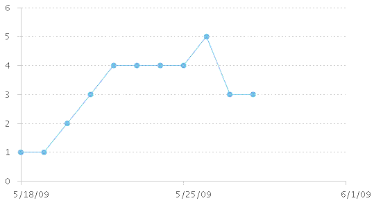

| Blocking Work Items |
|
PurposeThis metric is used to identify the trend of work items that are blocking the team from making progress. It can help you to identify road blocks and focus on removing them so that the team can move forward. This metric is useful when there are multiple teams working together. A high level of collaboration is needed due to interdependencies among the various tasks that teams are working on. DefinitionCount: the total number of open work items with a status of blocked in the iteration. AnalysisA good way to monitor Blocking Work Items is to use a line chart. Observe the growth of blocking work items over time.
In the following example, which shows open blocking work items, the team reached a peak of 5 blocking work items in the iteration. The number gets smaller as the iteration nears its end, but there are still 3 remaining open work items that are blocked. Frequency and reportingThe team reviews Blocking Work Items throughout the iteration to understand their progress at removing road blocks. This metric is also reviewed at the end of each iteration to help identify trends throughout the release. Collection and reporting toolsUse IBM® Rational® Team Concert® to track Blocking Work Items. An out of the box report plots all open work items with a severity of "Blocker" over time. |
Licensed Materials - Property of IBM |